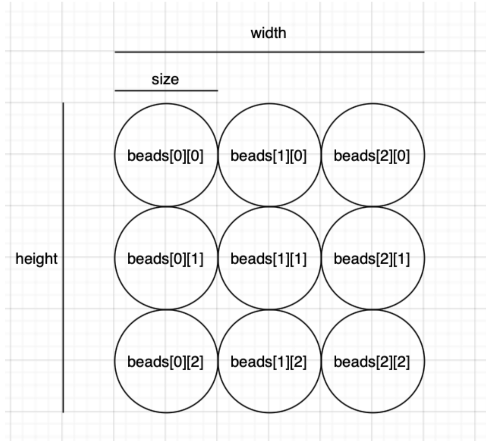
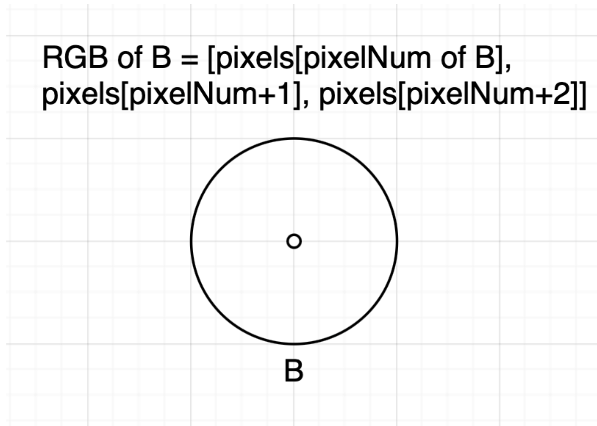
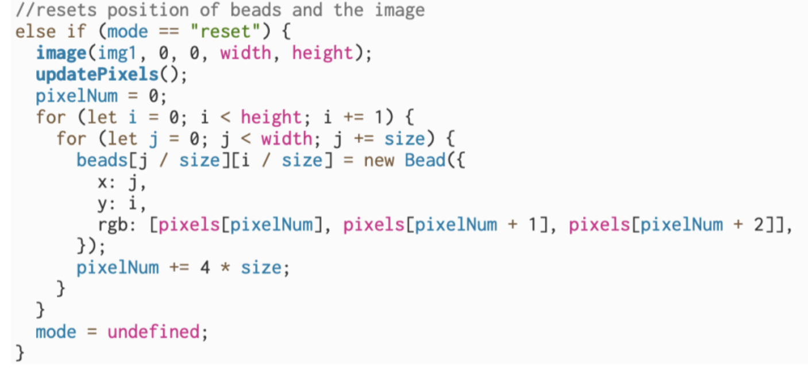

Documentation
Process
I first started by using a 2D array of beads to fill up the canvas.
Each bead necessarily consists of an x,y position, a diameter, adn a color. As I wanted to represent images using the beads, I needed to make the color of each bead correspond to the color of the pixel on the same x and y position. This correspondence is achieved by using the pixels array after loading the pixels of selected background image. Specifics about the pixels array can be found on:link, which was a massive help to my project.
I then experimented with different interactions between the beads to achieve different effects on the image.
The pixelate effect is simply achieved by drawing the beads and setting their x/y velocity to a random value between -1 and 1.

The wash effect is achieved by making the beads bounce around when they touch each other.

The flow effect is achieved by setting the y velocity of each bead to a random positive value between 0 and 10 and gradually erasing the beads and the background image.

I also allowed the user to reset the canvas by resetting the position of the beads, the background image, and updating the pixels array to allow for multiple attempts to modify the selected image.
